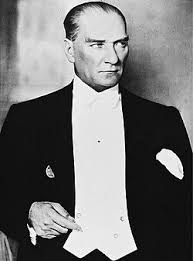

Aşağıdaki lider kartlarına tıklayarak hayatı, resimleri, devrimleri ve kararları hakkında detaylı bilgiye ulaşabilirsiniz.
Türkiye Cumhuriyeti'nin Kurucusu, Anafartalar Kahramanı ve Ulu Önder. Detaylı hayat hikayesi, resim galerisi, Türk milletine kazandırdığı haklar ve tarihi kararları için tıklayın.
🎵 İstiklal Marşı:
İstanbul'un Fatihi, Çağ Açıp Çağ Kapatan Cihan Padişahı. Gemileri karadan yürütme stratejisi, adalet fermanları, resimleri ve askeri dehası için tıklayın.
🎵 Ceddin Deden (Mehter Marşı):
Kurtuluş Savaşı'nın Batı Cephesi Komutanı olarak Birinci ve İkinci İnönü Zaferleri ile düşmanın belini kıran büyük asker ve devlet adamıdır.
Lozan Barış Antlaşması'nda Türkiye Cumhuriyeti'nin bağımsızlığını tüm dünyaya kabul ettiren başdelege ve Türkiye'nin 2. Cumhurbaşkanıdır.
Geliştirici / Yapımcı: TheMaxAep
Güvenlik Mimarisi: Static Jamstack Architecture + Cloudflare Anti-DDoS Shield
Amaç: Bilişim Teknolojileri Dersi Şanlı Türkiye Projesi